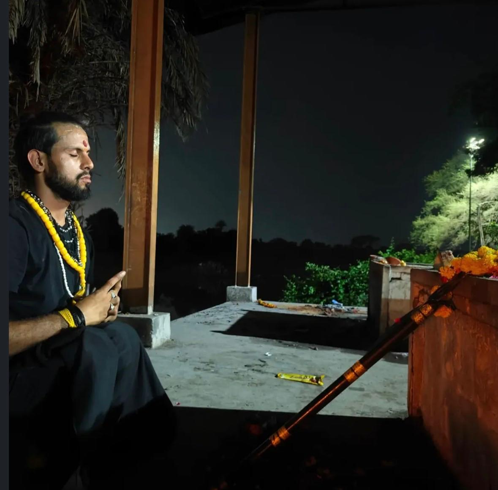

Black Magic & Satru Badha
Confidential guidance and traditional ritual support for concerns involving black magic, satru badha, or negative influences.
A PATH ROOTED IN TRADITION
Traditional tantra guidance and rituals for black magic concerns, satru badha, Vastu Shanti, anushthan, puja, and more—with Acharya Gopal K. Sharma in Mahakaleshwar, Ujjain.

THE TANTRASAGA APPROACH
Some questions ask for more than an answer. They call for careful listening, time-honoured knowledge, and a path shaped around you.
Acharya Gopal K. Sharma brings 10 years of experience in tantra practice. A devotee of Maa Baglamukhi and Maa Kali, he offers traditional guidance and ritual services with reverence and care from Mahakaleshwar, Ujjain, Madhya Pradesh.
Meet your guide ↗TRADITIONAL PRACTICES
Personal guidance and sacred ceremonies, thoughtfully tailored to your needs and traditions.
Confidential guidance and traditional ritual support for concerns involving black magic, satru badha, or negative influences.
Traditional Vastu consultation and shanti rituals to invite harmony and balance into your home or workspace.
Traditional anushthan, puja ceremonies, and other ritual observances arranged with care and respect for your tradition.
Personal consultation for a wide range of traditional tantra practices and ritual needs. Share your concern for guidance.
“When we honour the wisdom of tradition,
we make room for balance in the present.”
ACHARYA GOPAL K. SHARMA
BEGIN YOUR CONVERSATION
Share what’s on your mind. We’ll be in touch to understand your needs and discuss the right guidance for you.